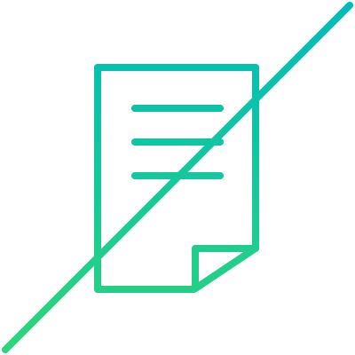
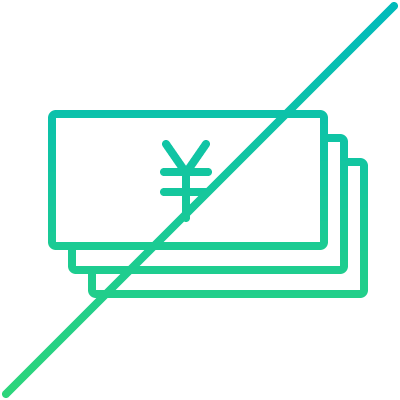
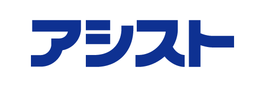
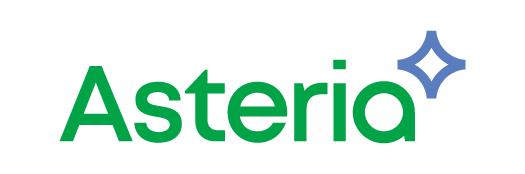
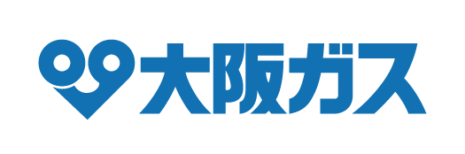
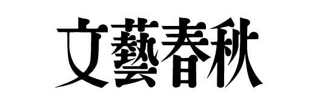
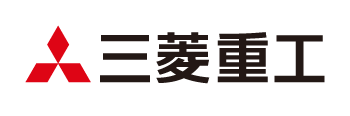
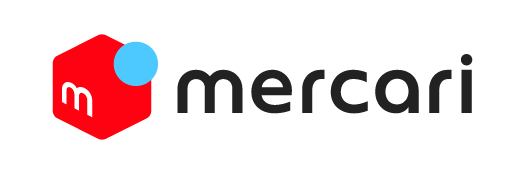

フランス発の エンジニア養成機関
42 Tokyo（フォーティーツー）は、フランス発のエンジニア養成機関です。
アメリカ・シリコンバレーをはじめ、世界各国に教育を展開しています。
完全無料で、革新的なカリキュラムを学習可能。
プログラミングを学びたい世界中の学生たちが、
今この瞬間も42でスキルを磨いています。
最高の学習環境を用意
- 
経歴不問
これまでの学歴や職歴、課外活動、国籍、人種などで入学希望者をフィルタリングすることはありません。
- 
学費完全無料
当校は42 Tokyoの理念に賛同する企業によって運営されており、入学金、授業料、教材費は一切かかりません。また卒業後のキャリアも自由に選ぶことが出来ます。
24時間オープン
校舎がいつでも開いているので、好きな時間に好きなだけコードを書くことができます。時間に縛られる教育はここにはありません。※
オンライン学習可能
住んでいる街や作業場所に関係なく、42 Tokyoのカリキュラムを楽しめます。どんな場所からでも一人前のエンジニアになれるチャンスです。
※当ビルの定めるメンテナンスや休館日によってご利用いただけない場合があります。また、18歳未満の方は校舎の利用が一切できません。
学生同士で教え合いながら進める
42 Tokyoは実際の社会と同じように、講師や授業がない状態で課題が始まります。課題を解くヒントをインターネットで検索したり、学生同士で知見を共有したりと、お互いに助け合って課題をクリアします。誰かのために知識をシェアできる、すぐれた仲間たちと一緒に成長できる学校です。
コンピューターの基礎から体系的に学ぶ
入学した全員が、コンピューターの基礎から勉強を始めます。一見、遠回りに感じる学問ですが、しっかりと体系立ったプログラミングを学ぶためのベースになります。時間をかけて基礎を固めたエンジニアの評価は、各国の42の卒業生によって証明されています。
プログラミングスキルだけでなく 学び続ける力を手に入れる
日進月歩のIT業界では、いま流行りの技術であっても、それが数年後に使えるとは限りません。エンジニアとは常に新しい技術を学び、不断の努力を求められる職業です。42 Tokyoでは数多くの課題への取り組みを通して、学び続ける力を身につけます。
42 Tokyoで学ぶには
入学応募
すべての入試日程で、応募者ページでWeb上の応募が必要です。［応募する］ボタンから進んでください。
一次試験 Webテスト
当校独自のゲーム形式のWebテストを受験いただきます。所要時間は30分程度で、論理的思考と記憶力を審査します。
二次試験
一次試験をクリアされた方は、続いて当校独自の入学試験「Piscine（ピシン）」を受験いただきます。
LAUNCH SPONSORS
42 Tokyoの学生は企業や個人の方々のサポートにより、カリキュラムのすべてを無料で学ぶことができます。
- 
- 
- 


- 
- 
- 
FOUNDING SPONSOR
キャンパス
住友不動産 六本木グランドタワー
東京メトロ南北線 六本木一丁目駅直結
日比谷線・大江戸線「六本木駅」から徒歩5分
完全オンラインの学習が可能です
新型コロナウイルス感染拡大に伴い、42 Tokyoのカリキュラムを完全オンラインで学べるようになりました。六本木キャンパスへ通学することなく学習できます。
Movies
入学者募集
コードを書く準備はできましたか？
私たちは、すぐれたエンジニアを目指し始めるすべての人を募集しています。